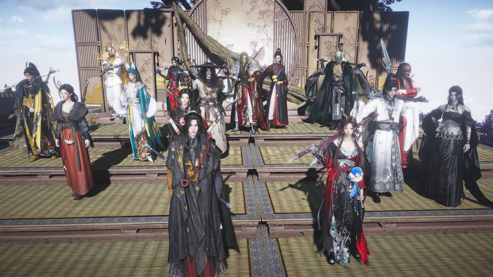
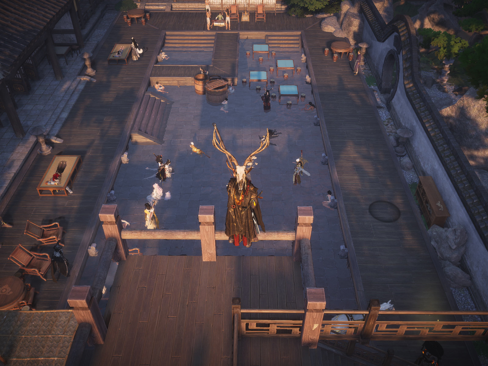
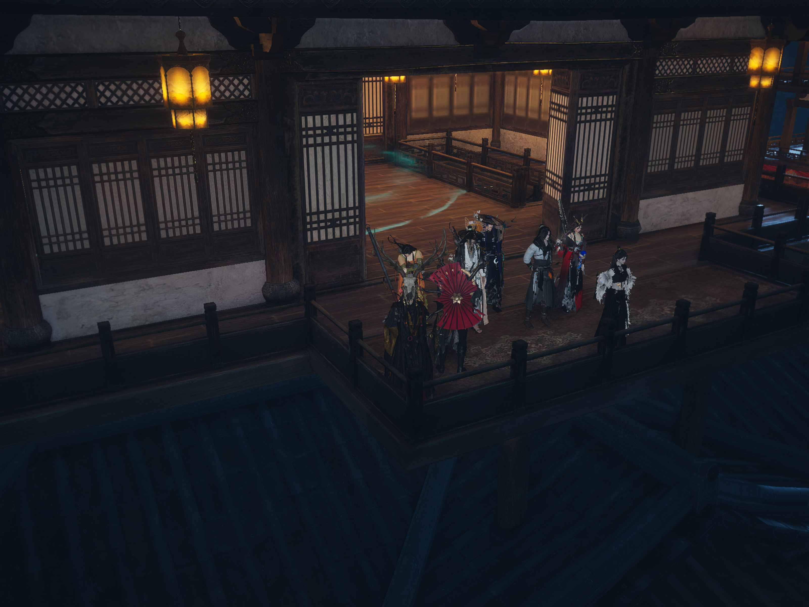

このサイトについて
皆さんお疲れ様です！副盟主の竜火です！この展示サイトは、同盟「猫と燕」の思い出をいつでも振り返るために同盟ロゴが完成と同時につくりました。メンバーのみんなと一緒に過ごした時間や、大切な瞬間を大切に残していくための場所です！
楽しい時間をこのサイトに保存して、同盟の歴史を一緒に育てていきましょう！
集合写真

同盟レベル6達成!
日記 - History -
2025.12.13
同盟「猫と燕」結成
始まりの日。数人の仲間と共に、新たな旅が始まった。
2026.01.9
烙彗さんが盟主に就任
新しい猫と燕がスタート！
2026.02.26
竜火が副盟主に就任
慣れないけど同盟のために精一杯がんばります！
2026.03.14
同盟レベルが６に！
メンバーの皆さんのおかげで同盟レベルが６になりました！これからも皆さんと仲良く楽しみたいです！記念撮影もして楽しみました(*^^*)
2026.03.16
同盟ロゴ完成！
同盟ロゴが完成しました！これからも同盟の皆さんと楽しく過ごしたいという想いを込めて作りました！
2026.03.16
同盟サイト完成！
同盟サイトが完成しました！楽しい時間をこのサイトに保存して、同盟の歴史を一緒に育てていきましょう！
日常 - Daily -
2026.04.06
宴の様子！
最近メンバーの皆さんが沢山増えて嬉しいです！これからもずっと賑やかで楽しい同盟で過ごせますように！

同盟戦記録 - War Record -
2026.04.06
同盟戦！
盟主班が護衛、副盟主班が妨害に分かれての実戦！皆さんお疲れ様でした！
